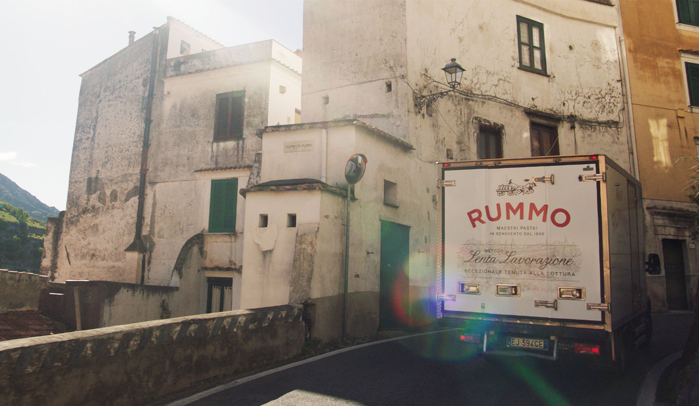
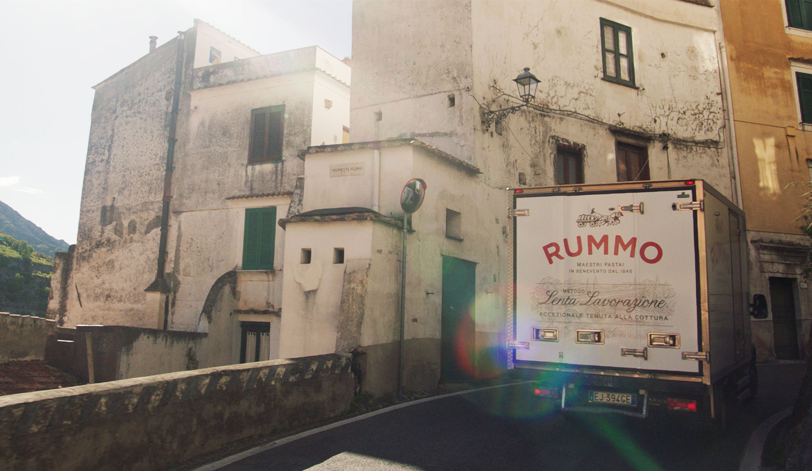

Sacri Monti
ABOUT THE PROJECT
The project consisted in redefining the identity of the UNESCO site "Sacri Monti del Piemonte e della Lombardia" placed in northern Italy
ACTIVITIES
Branding
Signage & Environmental Graphics
Merchandising
UI Design
Video
[Branding, Signage, Merchandising, UI Design, Video]

 
